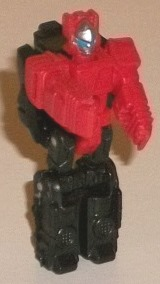
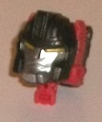
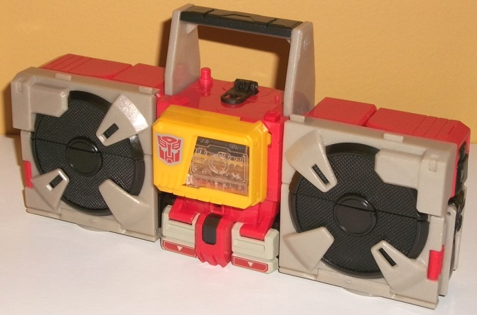
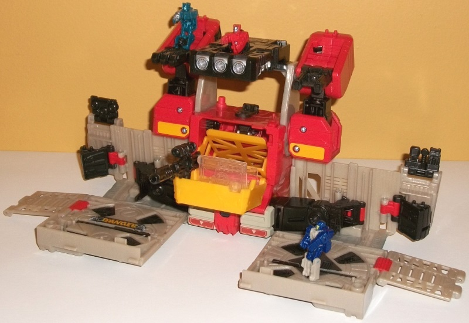
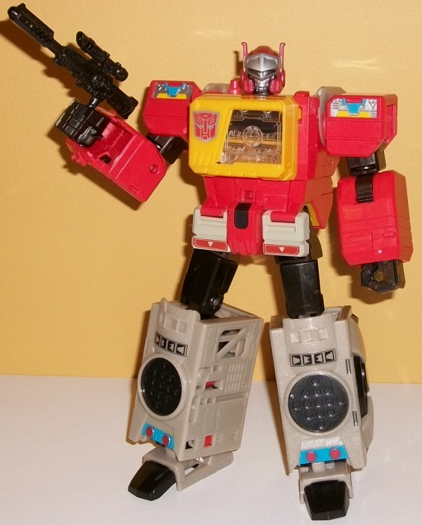

Allegiances
: Autobot
Size
: Leader
Difficulty of Transformation to Base
:
Medium
Difficulty of Transformation to Robot
:
Medium
Color Scheme
: Black, light pale
glittery tan, moderately pale red, and some clear plastic, silver, dull
yellow, moderately dark red, and moderately light sky blue
Rating
: 8.1


Twin Cast is the Titan
Master buddy for Blaster, and his name comes from the name of a Japanese
redeco of Blaster (Oh how funny it would be if TakaraTOMY releases an exclusive
redeco of this figure as Twin Cast w/ Blaster Titan Master). In Titan Master
mode Twin Cast is very much a mini-Blaster, with some minor proportional
changes to fit into the usual Titan Master size/proportions-- I mean, he's
clearly got Blaster-like details on his head (with some nice silver painting
on the forehead and face, and light blue on the eyes-- I love it when the
faces are painted on these little guys). He's also clearly got (unpainted)
detailing of his faux "tape deck" on his chest, and speakers on his legs,
with some rectangular details elsewhere on the figure. He's pretty much
all red and black, which go together nicely enough, even though I wish
there was just a little more to his scheme in Titan Master mode, like a
painted chest. As with all Titan Master figures, Twin Cast can move at
the head and back-and-forth at the shoulders, hips, and knees, with the
latter two moving as one since the lower legs are connected into a "uni-leg".
In head mode, Twin Cast really doesn't look like Blaster's face at all--
due to the fact that the head has to be "enlarged" as a whole for a Leader
class figure, a helmet fits over almost the entire head in Blaster's robot
mode. That gives the designers more freedom to make Twin Cast unique in
this mode, giving Twin Cast's face yellow eyes, a silver face with a hefty
chin, and a mostly black head (but with obvious red "antennae" formed by
the arms). It looks a bit like a stern version of
Perceptor's
head, but it's not so close it can't pass as another new character completely
if you want to put it on a smaller toy.



Blaster's alt mode is
something I never thought we'd see from a new mass-retail (i.e., not reissue
or Masterpiece) mold; he's an old-school boombox, just like his
G1
version
. The look of it has been modernized slightly, though, with
the speakers MUCH larger than on the original toy, and partially obscured
by "plastic bits that keep the speakers connected securely to the boombox"
even though, of course, it's all just detailing and nothing of the sort.
The casette-ejecting part of the alt mode has been CONSIDERABLY reduced
in size proportionally-- in fact, that's my main issue with this mode,
is how the center doesn't fit in aesthetically with the rest-- the cassette
area sticks out too much, and the section below the yellow robot chest
area doesn't really fit in with the surrounding pieces very well, with
visible gaps in between the sides of the abs and waist-- there's no real
reason for most of this, though the fact that the cassette deck has to
fit the Scout-class "smartphone" minions instead of the usual smaller cassettes
means that they actually slide down into Blaster's midsection in a diagonal
manner, with some "junk in the trunk" in this mode as a result, so to speak.
Just like the G1 toy, if you press on the little button on the left side
of the midsection, the yellow cover will flip out-- Blaster comes with
a missile pack-like weapon that stores in here, though you can take it
out and, as mentioned earlier, slot in any of his smartphone buddies in
its place. There's a couple of minor extras in this mode, the most obvious
being the little black bit in the center, which is a port for Twin Cast
or another Titan Master for Blaster's robot mode. Unfortunately Twin Cast
can't really store anywhere out-of-sight in this mode, though there is
a little peg to connect him to on the left side of the center. Blaster
also comes with his signature black gun, but again, nowhere to store it
inconspiciously-- there's a hole for it on the backside, but it sticks
out quite a bit from the back end even if you do that. Blaster's color
scheme steers pretty close to his G1 version, with a pale red, a dull yellow,
and some pale brown making up the main colors. I like how the red and yellow
(and the black on the speakers and handle) contrast against each other,
but the brown is just an UGLY shade. I understand it's accurate to the
G1 toy, but this is one thing they should have changed-- it's a kinda grayish
dull brown, but with glitter in it to make it a bit sparkly. (What? How
does that make it look like ANY cassette player?) Blaster's mold detailing
is mostly fairly sparse, which makes a bit of sense given that he's supposed
to pretty much be the size he actually is, and it's not like tape decks
are known for having a bunch of details on them. The speakers have the
nice criss-crossed detailing on them, and there's some targeting detailing
on the clear plastic for the base mode, but that's about it as far as noteworthy
details in this mode.
Like nearly all Titans
Return Leader-class figures, Blaster has a base mode, and like pretty much
every Transformers base mode ever, it's... pretty arbitrary. It's basically
the boombox mode, but with all the parts splayed out as much as posssible;
the sides are opened up and laid down with little ramps and details flipping
out of the sides and top, while the tape deck flips down, the included
missile rack/gun piece clipped onto the boombox handle, and the robot hands
moved up and back a bit, with guns flipped down from the lower arms to
form "side towers". The color black is more apparent in this mode, but
not to such a large extent that it changes the general color scheme of
pale red and sparkly tan. I do like how solid the large rectangular black
piece looks clipped to the handle as the "main tower", with a place in
the middle for a Titan Master to sit in it. The arm towers are definitely
the weakest part of an already fairly weak mode, as they're just waaay
too obviously the arms, and the slant at the top is odd. There are two
pegs on the top of each of the side towers for a Titan Master, though,
and more guns is always good. The open tape deck includes a flip-up targeting
reticle, along with a peg for a Titan Master and a 5mm peg for Blaster's
gun or other compatible weapons. Blaster's upper legs are quite obvious
on the back of the large open "floor spaces" on the sides of this mode,
but the way the back side of the speaker pieces form circular pads on the
floor of this mode is a nice touch (along with the "DANGER" decal on one
of the pads); there's also a 5mm port in the corner of each of these side
pads, along with 3 pegs for Titan Masters on each pad. There's a couple
of little side guns/sound weapons formed from the feet near the back, which
form an okay accent but otherwise don't really add much. Additionally,
there's fold-down ramps, with clips that you can use to clip Blaster onto
other Titans Return bases to make a mega-base if you so desire.
Blaster's robot mode
is the most "G1-iest" of all of his modes, with very blocky, boxy proportions
and a look very much taken from his G1 toy. Other than the handle for the
boombox mode hanging off the upper back, there's no extras in this mode
whatsoever, which is quite impressive. The mold detailing on the robot
parts is actually quite minimal, going for a more "cartoony" look in that
respect, with only some lines across his upper and lower arms, and almost
no detailing on his black parts. The helmet that fits around Twin Cast's
head mode makes Blaster's head look very much like it looked in the G1
comics, which is a nice nod he hasn't had in a while. He also has some
neat details on his lower legs, with some faux speakers, black details
a little below the knees, and some light blue-and-red details near the
ankles that help to break up much of that ugly sparkly tan on the lower
legs (though I wish there was at least a little paint on the inside portions
of the lower legs). Blaster also can hold his signature gun in either of
his fist holes quite solidly, though the fact that his fists merely fold
out from the bottom of the lower arms without any panels to cover up that
new gap doesn't look so hot from certain angles. For articulation in this
mode, Blaster can move side-to-side at the neck, as well as movement at
the shoulders (at two points), elbows (at two points), inwards slightly
at the wrists, and movement at the hips (at three points), knees, and ankles
(at two points). All of his joints are fairly sturdy, so he's quite stable--
though unfortunately he doesn't have any waist rotation because of the
space needed to store a smartphone-cassette bot in his chest.
Titans Return Blaster
is an okay mold, with my primary recommendation for him being a very solid,
sizeable robot mode that can store any of the Scout smartphones from this
subline, in a slightly updated version of the G1 gimmick (though why you'd
store smartphones in a boombox is beyond me). His boombox mode is also
kind of a cool blast from the past, even though the midsection of it doesn't
"fit" the side sections. The base mode has some... passable areas, but
is generally something I just forget about. That said, that's me; if you're
really into Titan Masters interacting with huge bases, that's definitely
something to consider as well. Mildly recommended.
Review by Beastbot